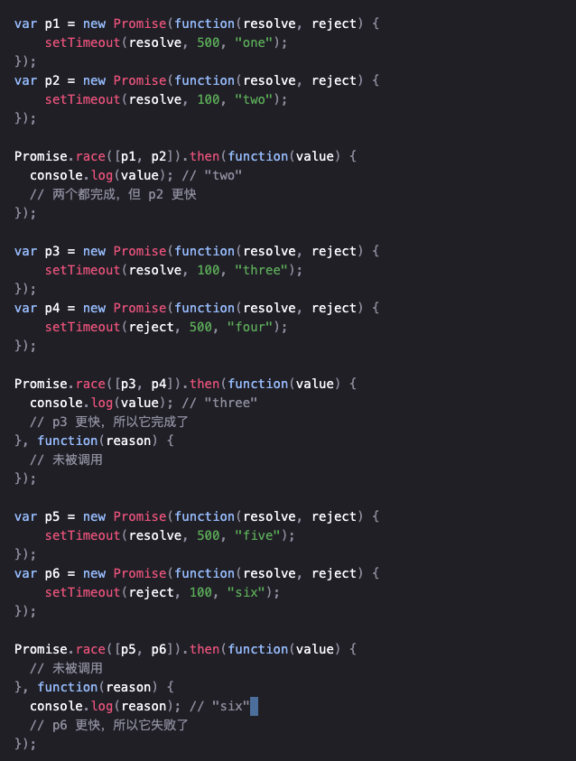

Promise
场景
- 解决Ajax回调地狱问题
- 异步任务回调改成同步写法
- 某些逻辑需要等待上一个逻辑执行完成。或者拆分大函数，后部分逻辑需要等待前部分逻辑执行完
基础
- Promise是异步的，代表未来某个时机会执行。
- 三种状态（1）pending(待定的)；（2）fulfilled(已解决); （3）rejected(已失败)；一旦状态改变，不可逆，任何时候都可以得到这个结果
- Promise对象是一个构造函数，用来生成Promise实例
- 实例化时，Promise构造函数接受一个函数作为参数，该函数的两个参数分别是resolve和reject，resolve用来将“未完成”变成“完成”，reject将“未完成”变成“失败”
Promise方法
- all()：Promise.all([p1, p2, p3])，所有异步函数都变成fulfilled时，才返回fulfilled，有一个变成rejected，就返回rejected
- allSettled()：Promise.allSettled([p1, p2, p3])，所有异步都执行完后返回。成功给出结果，失败给出原因，
- race()：Promise.race([p1, p2, p3])，只要有一个异步函数执行完成返回成功或失败，就返回成功或失败，且立刻结束，其他请求的数据不再关心
- any()：Promise.any([p1, p2, p3])，只要有一个执行成功，就返回该promise数据

Promise链式调用
- 被链式调用的函数需要返回一个promise，同时可以接收一个参数，来自于上一个promise的执行结果。具体见script部分
手写Promise
- 见script部分